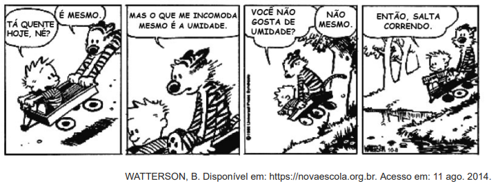
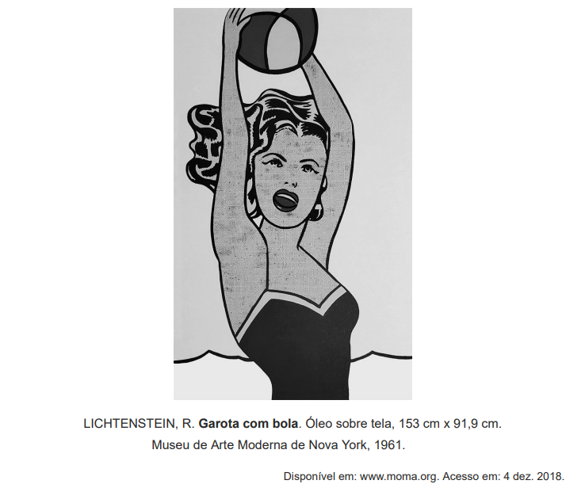

Considere a tirinha, na situação em que a temperatura do ambiente é inferior
à temperatura corporal dos personagens.

O incômodo mencionado pelo personagem da tirinha deve-se ao fato de que, em dias úmidos,
Observe a obra a seguir

A obra, da década de 1960, pertencente ao movimento artístico Pop Art, explora a beleza
e a sensualidade do corpo feminino em uma situação de divertimento. Historicamente, a
sociedade inventou e continua reinventando o corpo como objeto de intervenções sociais,
buscando atender aos valores e costumes de cada época. Na reprodução desses
receitos, a erotização do corpo feminino tem sido constituída pela